2 Industry Snapshot
2.1 Local Finance
Key Points:
- Large banks experienced an increase in deposits as a percentage of liabilities with 75.65% as of 09/30/2020 compared with 73.42% the year prior.
- As of 09/30/2020, small banks’ net income is -77.52% lower than the same time last year.
- Both small and large banks exceeded their pre-recession levels for return on assets.
FDIC Call Reports are released for all banks in the U.S., providing financial statement information to the public that is otherwise unavailable for private companies. The Local Finance section reports and analyzes banks that have a presence in Santa Barbara County. Using the data from FDIC Summary of Deposits, we examine each bank’s activity and health on a local level. For banks with an international presence, we are not able to factor out their international operations due to limitations in the data provided by the FDIC Call Reports. Therefore, 6 out of the 19 institutions have an aggregated total of both domestic and foreign operations for their assets and liabilities. The difference makes up about 4% of the total – which does not materially change the analysis on a local level.
In this section, we have two categories: large banks and small banks. Large banks are banks that operate on both regional and national levels; whereas, small banks are comprised of solely regional banks and banks with less than $2 billion in total assets. Big banks in this year’s data include Rabobank, Union Bank, Wells Fargo, JP Morgan Chase, Bank of America, First Republic Bank, Bank of the West, The Northern Trust Company, Pacific Western Bank, U.S. Bank, Citizens Business Bank, First Bank, and Banc of California. For our analysis on small banks, we have included American Riviera Bank, Community West Bank, Pacific Premier Bank, Montecito Bank & Trust, Community Bank of Santa Maria, Bank of the Sierra, and Farmers and Merchants Bank of Long Beach.
The data in this section has been adjusted for inflation; therefore, all numbers in the section are in terms of 2009 dollars. Nominal numbers have been adjusted to real numbers on a quarterly basis with the CPI from the Federal Reserve Economic Data, giving us a more comporable analysis of banking trends, particularly in times of large price movements. Moreover, all metrics describe totals for the industry unless otherwise specified.
2.1.1 Savings and Time Deposits
Deposits held by banks represent the vast majority of liabilities for both categories. As of 09/30/2020, large regional banks held 75.65% of their total liabilities as deposits, an increase from 73.42% the same time last year. On the other hand, small regional banks held 87.51% of their total liabilities as domestic deposits, up 0.01 percentage points from last year. Since deposits represent such a large percentage of total liabilities, it is important to understand the trends within each bank category in order to understand where consumers are depositing money.
Small and large banks display similar trends in terms of deposits as a percentage of total liabilities. Until this year, large banks had been steadily increasing their deposits as a percent of total liabilities over the past few years, whereas small banks have been more volatile.
Since the Great Recession, both small and large banks have increased their percent of deposits as a fraction of liabilities. This trend peaked for small regional banks at 87.94% on 06/30/2020, 7.23 percentage points higher than at the end of 2007. Deposits as a fraction of liabilities for large banks peaked at 76.35% on 06/30/2020, 25.78 percentage points higher than it was at the end of 2007.
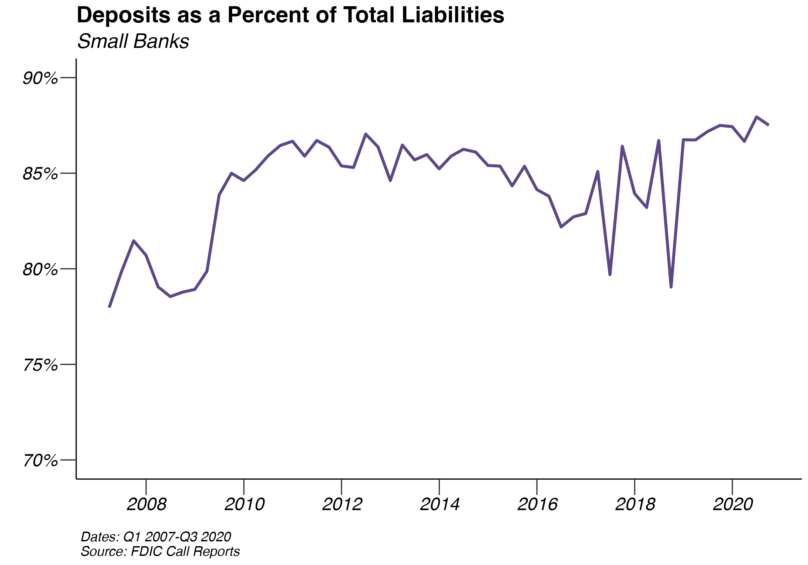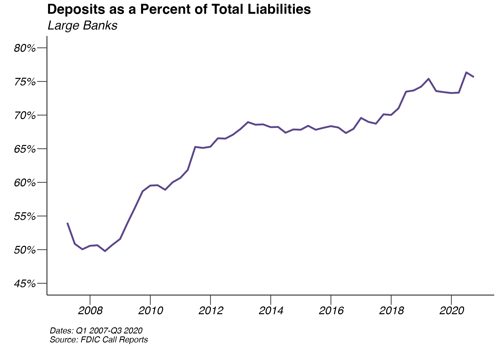

In 2020, the banking industry in Santa Barbara County consisted of 20 institutions with $15,355,639,000 in deposits. Compared with the previous year, there was an increase of 33.2% in deposits with an increase in the number of banks. The numbers in the table below are in nominal terms since the change in CPI from 2020 to 2021 was small, making the deposits relatively comparable. Wells Fargo experienced the largest increase in deposits with a change of 44.47%. Banc of California had the largest decline in deposits, falling from $65,137,000 to $50,957,000 or -21.77%. As banks know when their deposits will be measured every year, we cannot rule out some level of manipulation of deposits that leads to large fluctuations.
|
Position
|
Name
|
Position Change
|
Deposit (in thousands)
|
Market Share
|
||
|---|---|---|---|---|---|---|
|
2020
|
2019
|
Change
|
2020
|
|||
| 1 | Wells Fargo | $3,135,902 | $2,170,680 | 44.47% | 20.42% | |
| 3 | Bank of America | +1 | $2,198,376 | $1,768,493 | 24.31% | 14.32% |
| 2 | Union Bank | -1 | $2,102,760 | $1,873,599 | 12.23% | 13.69% |
| 4 | JPMorgan Chase Bank | $1,692,192 | $1,373,563 | 23.20% | 11.02% | |
| 5 | Montecito Bank & Trust | +1 | $1,428,316 | $1,170,904 | 21.98% | 9.30% |
| 6 | Mechanics Bank | New | $1,225,623 | 7.98% | ||
| 9 | American Riviera Bank | +2 | $626,417 | $495,605 | 26.39% | 4.08% |
| 8 | Pacific Premier Bank | $620,339 | $499,204 | 24.27% | 4.04% | |
| 7 | Community West Bank | -2 | $550,185 | $606,260 | -9.25% | 3.58% |
| 10 | First Republic Bank | $482,730 | $380,431 | 26.89% | 3.14% | |
| 12 | Community Bank of Santa Maria | -1 | $290,492 | $226,151 | 28.45% | 1.89% |
| 11 | Bank of the West | +1 | $236,308 | $261,251 | -9.55% | 1.54% |
| 13 | Pacific Western Bank | $211,435 | $175,351 | 20.58% | 1.38% | |
| 14 | The Northern Trust Company | $181,991 | $171,808 | 5.93% | 1.19% | |
| 15 | First Bank | $161,252 | $155,754 | 3.53% | 1.05% | |
| 17 | U.S. Bank | +2 | $55,546 | $47,051 | 18.05% | 0.36% |
| 18 | Bank of the Sierra | $53,370 | $49,305 | 8.24% | 0.35% | |
| 16 | Banc of California | -2 | $50,957 | $65,137 | -21.77% | 0.33% |
| 19 | Farmers and Merchants Bank of Long Beach | $33,873 | $25,001 | 35.49% | 0.22% | |
| 20 | Citizens Business Bank | $17,575 | $12,917 | 36.06% | 0.11% | |
| Totals | $15,355,639 | $11,528,465 | 33.20% | 100.0% | ||
2.1.2 The Herfindahl-Hirschman Index
The Herfindahl-Hirschman Index (HHI) is a commonly used measure of industry concentration. Ranging from 0 to 1, the HHI is found by summing the squared market shares of all the firms. When the HHI is 0, a market has a large number of equally sized firms; on the other hand, when the HHI is 1, a market has only one firm. According to the Department of Justice, any market with a HHI between 0.15 and 0.25 is considered to be moderately concentrated. When a market exceeds 0.25, the Department of Justice finds it to be a concentrated market, which may require further review before any mergers can occur.
For Santa Barbara County, the current HHI is 0.1147. Therefore, the current banking industry in Santa Barbara is un-concentrated. The HHI for the County increased by 16.39% compared with last year’s HHI of 0.0986.
2.1.3 Loans and Leases
In the past year, loans and leases appear to be trending upwards for large banks, while small banks experience a slow decline following the first quarter of 2019. The average quarterly growth rate for large banks between 09/30/2019 and 09/30/2020 was -0.33%, an increase from that of -0.67% during the year prior. Since the first quarter of 2007, the average quarterly growth rate of loans and leases for large banks has been 0.82%.
Between 09/30/2019 and 09/30/2020, small banks saw an average quarterly rise in loans and leases of 18.94%, lower than their average growth rate over the previous year, which was 7.58%. In total, loans and leases for these banks rose from $14,573,223 to $29,162,281. The average quarterly growth rate of loans and leases since the first quarter of 2007 is 5.56%.
Both small and large banks saw sharp increases in loans throughout 2020, with the COVID-19 pandemic and subsequent quantitative easing policies. Loans have seen some dropoff starting in 2021 for both large and small banks.
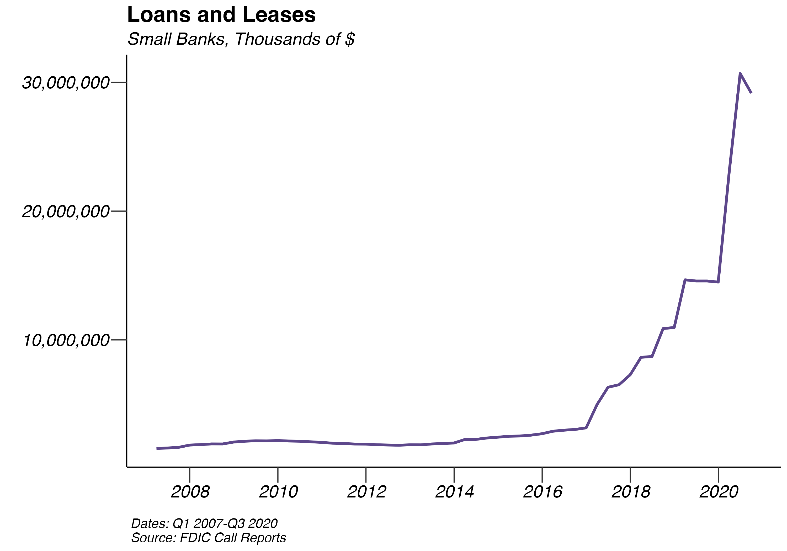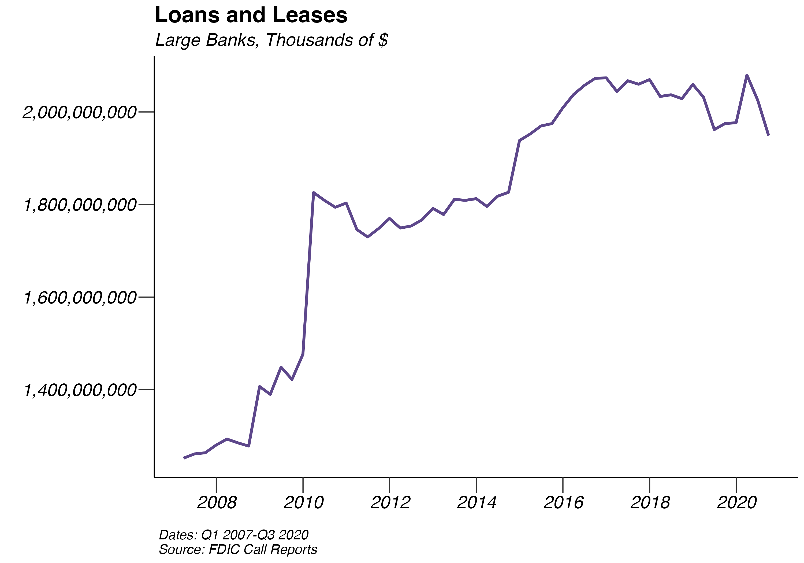
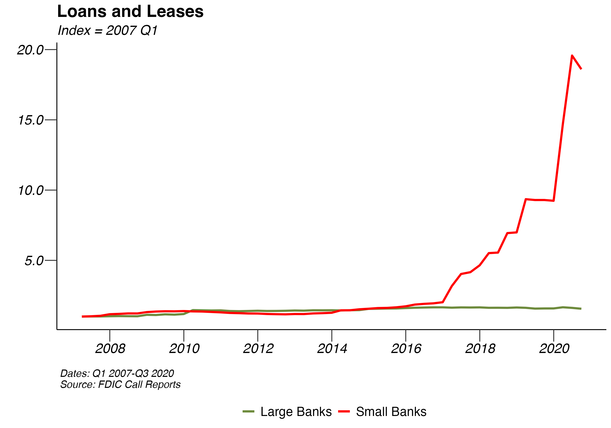
2.1.4 Net Income
Real net income decreased by -77.52% for small banks between 2018 and 2019, falling from $132,834 to $29,858. Small banks’ net income has recovered tremendously after seeing losses in 2009 and 2010. For large banks, net income decreased by -80.27%, reversing the upward trend of the past few years.
Since the collapse of the financial markets in 2008, banks have experienced a healthy rebound. Although, simply looking at the value of net income does not account for the increase in the size of many banks. In order to take this into account, we divide total net income for the industry in a given year by the industry’s year end total assets to calculate the industry’s Return on Assets (ROA). The ROA graph demonstrates the industry’s return on assets this year compared with that in 2007 . Both small and large banks have surpassed their pre-recession levels in 2019. In 2014, the total return on assets for both large and small banks declined, but there appears to be a robust rebound. As of the end of 2019, large banks stand 5.45% higher than 2007 return on assets while small banks are now 31.11% higher than 2007 levels.
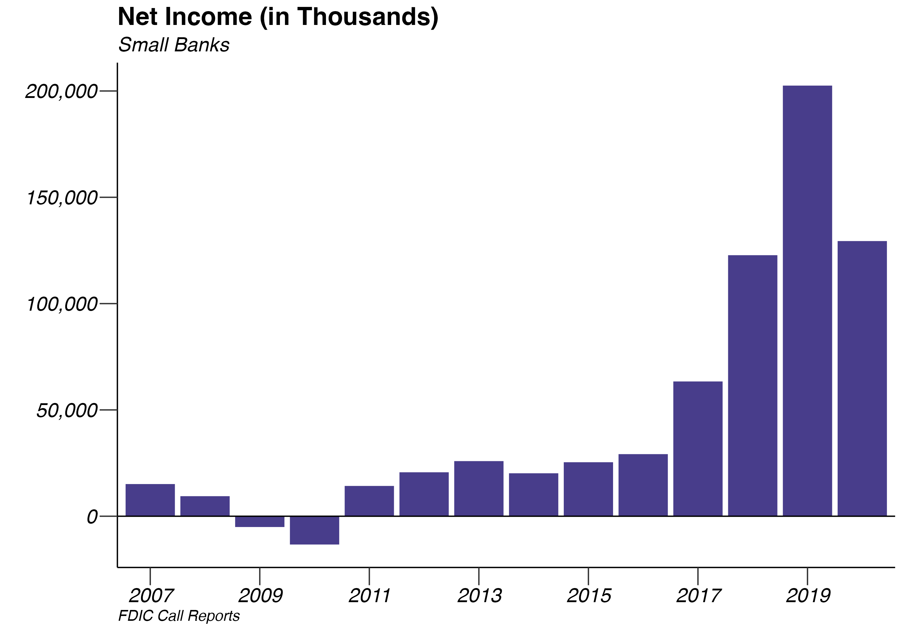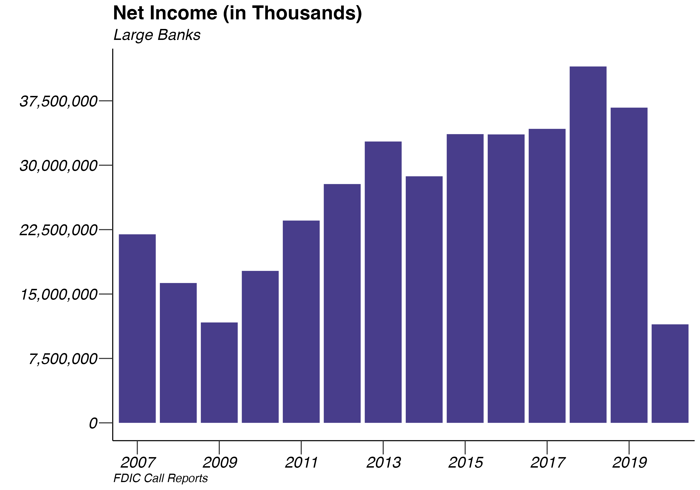
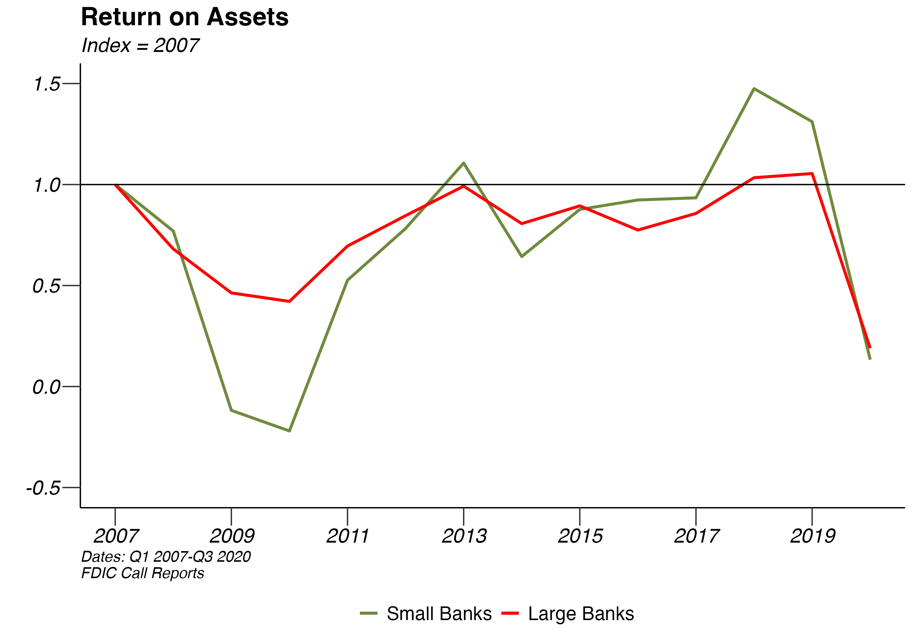
2.2 Oil and Gas
Key Points:
- California’s production of crude oil has been declining since the late 1980s and decreased by 6.43% between 2021 and 2022.
- Crude oil prices increased by 45.6% from July 2021 to July 2022.
California’s field production of crude oil has been decreasing every year since 2014. Oil production decreased in 2022 by 6.43% compared to the decrease in oil production in 2021 of 7.75%. In 2020, oil production decreased by 9.56%. From 2018 to 2019, oil production decreased by 9.56%.
In addition, oil prices have been increasing sharply from their lowest-ever price of in April 2020. Oil prices rose by 45.6% from July 2021 to July 2022. So far in 2022, the price for WTI-Texas has averaged $101.62, compared with an average of $68.24 in 2021. From July 2020 to 2021, oil prices increased by 76%. Of particular note during 2022 is the sharp increase in oil prices resulting from the invasion of Ukraine. However, price growth has started to slow down, with the average price of oil declining from June to July of 2022.


2.2.1 Federal Offshore Oil Production
Federal offshore oil production has been declining since the mid-1990s and has now reached the lowest level in the recorded data. So far in 2022, federal offshore oil production has averaged 211 thousand barrels per month, a -37.08% decrease compared with the average of 335.33 thousand barrels per month in 2021. At its peak in 1995, federal offshore oil production reached 6,312 barrels per month.

2.3 Agriculture
Key Points
- Total crop value increased by 5.44%, from $1.82 billion in 2020 to $1.92 billion in 2021.
- The total value of strawberries, the county’s highest-grossing crop, increased by 16.81% from $727.4 million in 2020 to $849.7 million in 2021.
- Total sales of wine grapes reached 105.15 in 2021, a increase of 12% compared with 2020.
2.3.1 Total Crop Production
The total crop value in 2021 was $1.92, an increase of 5.44% from the prior year. This represents a decline in growth compared with the previous year, when the total crop value increased by 14%. Total harvested acres of vegetables, fruits, nuts and field crops decreased by 0.75%.

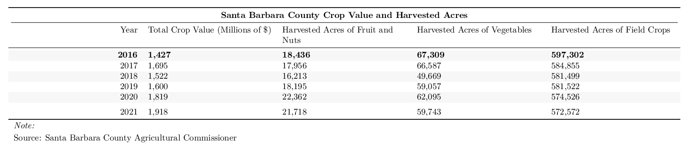
2.3.2 Leading Crops
Production of strawberries, the county’s highest-grossing crop for the past 20 years, had a gross value of $849.7 million in 2021. This represents a 16.81% increase in gross value of strawberry crops from 2020, which was $727.4 million. The value of the strawberry crop has nearly doubled in the past decade, and the pace of growth was particularly fast in the past two years. From 2019 to 2020, the strawberry crop’s value grew by 27.35%.

Broccoli’s crop value declined in 2021, decreasing from $104.654 million the previous year to $101.371 million. The 3.14% decrease in gross value reversed the trend from the previous year, when the value of the broccoli crop grew by 30%. Total harvested acres of vegetables, the category that includes broccoli, decreased by -3.79%.

The Santa Barbara County wine grape crop value rose by 12% from $93.84 million in 2020 to $105.15 in 2021. The average price per ton of wine grapes grown in Santa Barbara County increased by 4.15% to $1,959. The average price per ton from 2004 to 2021 was $1,572, well below the price in the past year.
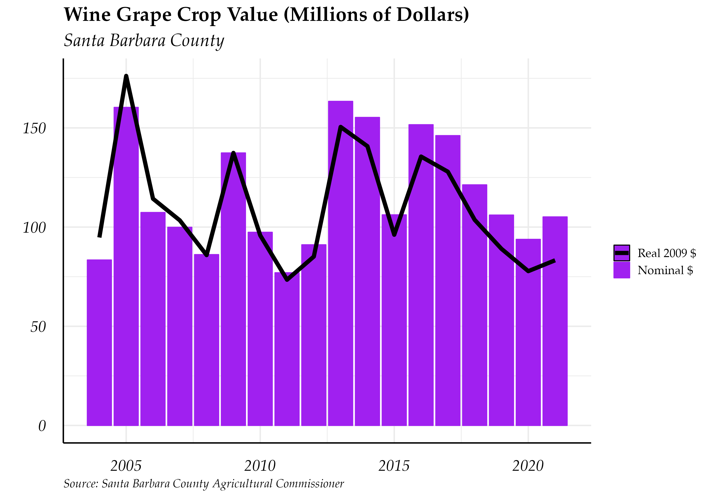
The avocado crop value plummeted by 10% from $80.161 million in 2020 to $50.726 million in 2021. By comparison, the value of the avocado crop increased by 126.37% from 2019 to 2020. The average annual value of the avocado crop from 2004 to 2021 is $47.12 million. In recent years, the avocado crop has experienced more volatility in its value than many other crops.

2.3.3 Wine Grape Production
In Santa Barbara, Ventura and San Luis Obispo Counties, the average price of white wine grapes in 2021 was $1,827 and the average price of red wine grapes was $2,131. The average price of grapes in the Central Coast region is typically higher than the statewide average. Production of red wine exceeds production of white wine in the tri-county area: in 2021, this region crushed 182,300 tons of red grapes and only 57,756 tons of white grapes. Santa Barbara is best known for its Chardonnay and Pinot Noir, the former of which cost $1,285 per ton and the latter of which cost $2,385 per ton in 2021. The most heavily produced type of wine in the tri-county area is Cabernet Sauvignon, at 86,990 tons in 2021.
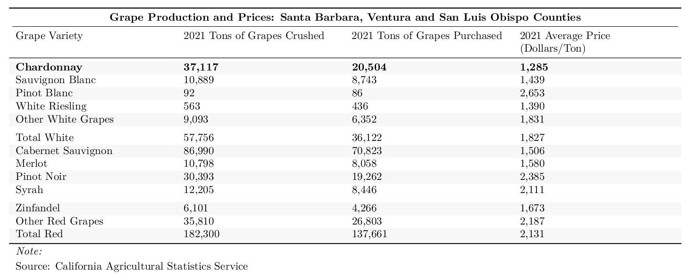
2.3.4 Drought Recovery
In 2021, 85.47% of California was in a severe drought, a 257% increase from the average in 2020. So far in 2022, the percent of California in a severe or moderate drought has increased by 2.15% and 3%. However, the percent of the state in the most severe drought categories of exceptional drought and extreme drought has declined by -46.48% and -84.92%, respectively.
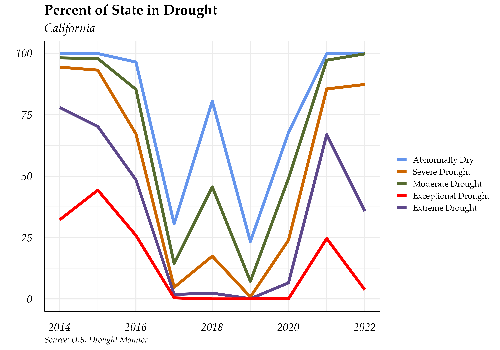
The percent of Santa Barbara, San Luis Obispo and Ventura counties in the most severe category of exceptional drought has declined substantially since 2014. However, the vast majority of the land in all three counties remains either abnormally dry or in a moderate drought, highlighting the importance of continued water conservation efforts despite improvement in drought status in the last several years.
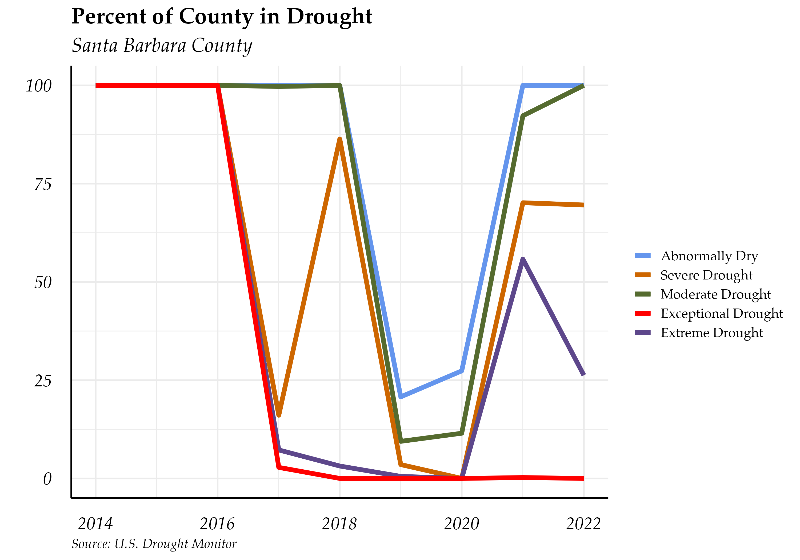
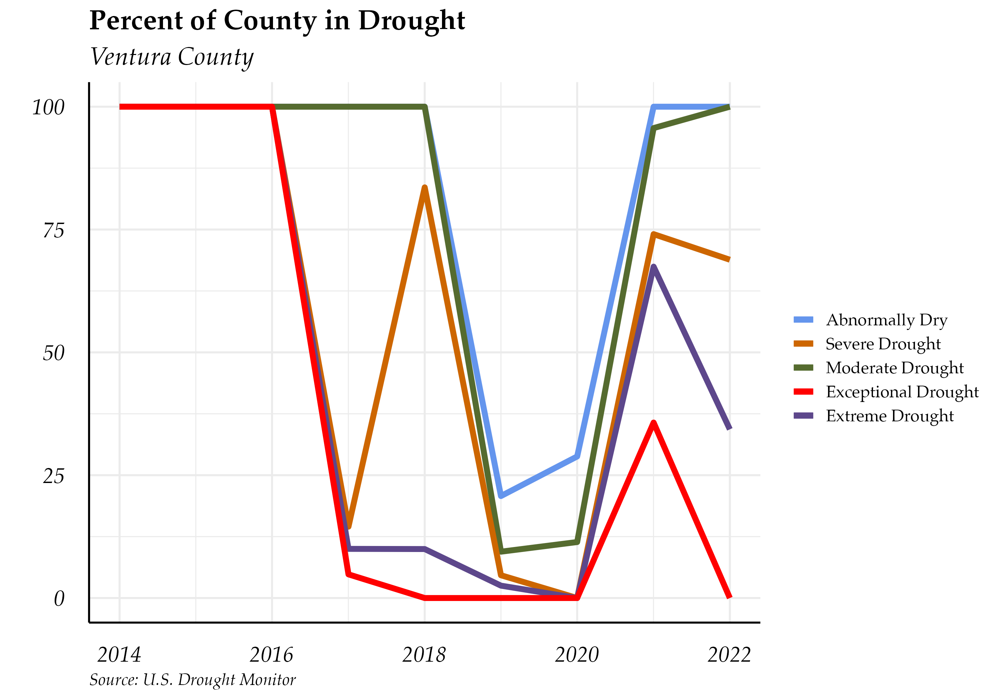